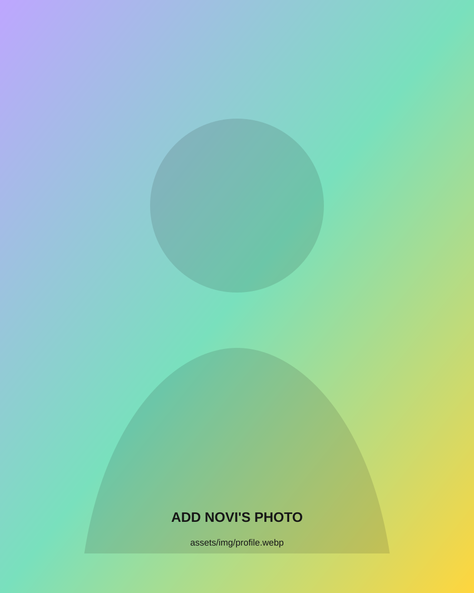

01CARA SAYA BEKERJA
Rapi dulu.
Baru bergerak cepat.
Saya suka membuat informasi lebih mudah dibaca, pekerjaan lebih teratur, dan komunikasi lebih jelas.
ADMINISTRATION / OPERATIONS / CUSTOMER SUPPORTHalo, saya
Saya membantu pekerjaan tetap rapi—data jelas, informasi sampai, dan tindak lanjut berjalan.
↓
Saya suka membuat informasi lebih mudah dibaca, pekerjaan lebih teratur, dan komunikasi lebih jelas.
ADMINISTRATION / OPERATIONS / CUSTOMER SUPPORTSetiap peran menambah satu lapisan: data, akurasi, customer, reporting, dan dukungan operasional.
Menangani call customer, membantu alur sales, membuat video pemasaran, serta reporting harian, mingguan, dan bulanan.
Memproses 50–80 transaksi harian, balancing kas, menjaga zero discrepancy, membuat laporan kas, dan menjalankan prosedur kepatuhan.
Mengelola input data manifes, administrasi 100+ barang per hari, dan verifikasi dokumen logistik.
S1 Manajemen memberi fondasi pada administrasi bisnis, operasional, keuangan, pemasaran digital, dan perilaku konsumen.
“Pengaruh Viral Marketing dan Reputasi Merek terhadap Keputusan Pembelian Produk Somethinc.”
Di CGUD, mengelola administrasi dan jadwal roadshow ke 20 sekolah serta mendukung program yang mencapai 1.000+ siswa.
Proyek independen berbasis Microsoft Excel yang menunjukkan cara saya menyusun data, kontrol, dan pelaporan keuangan secara sistematis.
Simulasi workbook untuk pencatatan kas, monitoring transaksi, dan rekonsiliasi dengan struktur multi-sheet dan formula terintegrasi.
Workbook terintegrasi untuk mengorganisasi chart of accounts, master data, trial balance, laporan keuangan, dan ringkasan manajemen.
Terbuka untuk peluang Administration Staff dan peran operasional. Untuk diskusi rekrutmen atau kolaborasi profesional, silakan hubungi saya melalui kanal berikut.